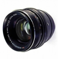

120/2.8 Biometar东德卡尔蔡司镜头。该镜头有MC和SC版本的差别，光学结构与80/2.8 Biometar一样，该镜头的做工精细，而且镜头前缘还有一条车制的白色金属亮线，给人一种专业镜头的感觉，所有调节功能都集中在镜头的前半部，而镜头的后部显得比较光秃。镜头显得有些大，重量也较重。
朴实无华，物美价廉（与西蔡司比），像质卓著。
同上
遮光罩不好配
比老毛子的头好得多了去了！真的不是一个档次上的东西哦～～～～
非电子化的东西，还是比较耐用的。
这玩艺儿多少要自己会捣古捣古，到手的均是二手货，前几任的拥有者总会去拆修它，以至于距离标尺环都有偏差、景深预测钮会失灵，不自己再搞一下是不能拿来就用的。。。。。。 至于价钱嘛，其实也不便宜，买一支玛米雅或勃朗尼卡的头也不比他差的。